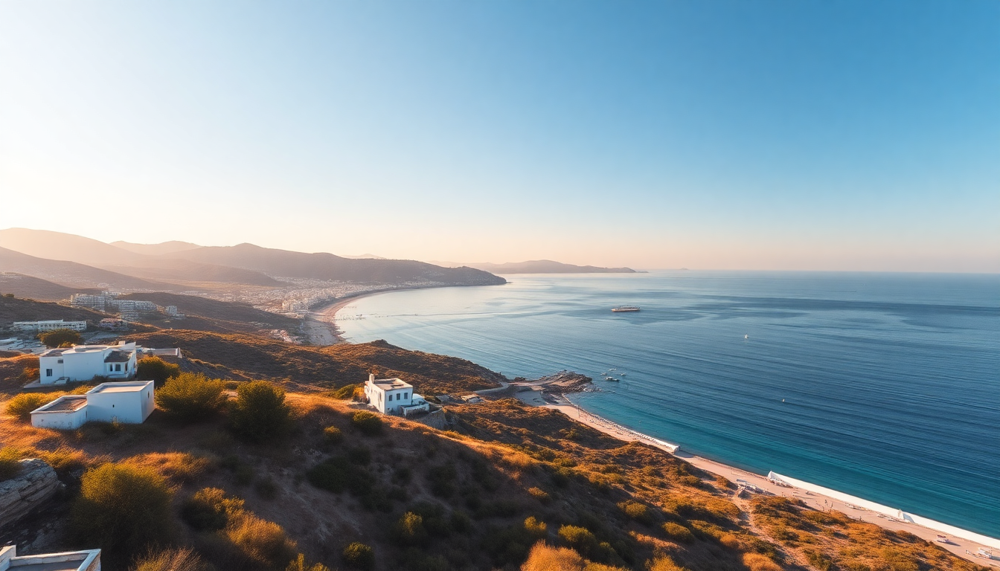

Best Beaches in Greece: Cyclades Islands Mykonos, Santorini, Naxos Guide

I spent two weeks island-hopping through the Cyclades last June, and the biggest surprise wasn’t the postcard views—it was how different the beach scene is from island to island. Mykonos is a party on sand, Santorini is all about volcanic drama with limited swimming, and Naxos is the sleeper hit for actual lazy beach days. Here’s what I learned, island by island.
What makes Mykonos beaches worth the hype (and the prices)?
Mykonos beaches are famous for a reason—the water is absurdly clear, and the beach clubs are full-on productions. But you’ll pay for it. A sunbed at Paradise Beach runs €50-100 for a pair during peak season, and that’s before you buy a €12 beer. If you want the scene, Super Paradise Beach is louder and more LGBTQ-friendly. If you want to actually swim without techno blasting, skip both and head to Agios Sostis Beach on the north coast—no sunbeds, no clubs, just a small taverna (Kiki’s Taverna, cash only) with grilled octopus that’s worth the wait.
- Paradise Beach – Party central, young crowd, music all day. Water is clean but expect crowds by 11 AM.
- Super Paradise Beach – Gayer, louder, pricier. Good for people-watching.
- Agios Sostis Beach – No frills. Bring a towel and snacks. Kiki’s Taverna opens at 1 PM; line starts at 12:30.
- Ornos Beach – Family-friendly, calm water, plenty of tavernas like Kostas Taverna for decent souvlaki.
I stayed at Hotel Aeolos in Mykonos Town—basic but clean, and a 10-minute walk to the bus station that connects to all beaches. Buses run every 30 minutes in summer and cost €2-3 per ride. Taxis are scarce and expensive (€20-30 for a short hop).
Which Santorini beaches are actually swimmable?
Let’s be honest: Santorini is more about the caldera views than the beaches. The famous red and black sand beaches are striking but not comfortable. Red Beach near Akrotiri looks incredible from above—red cliffs, turquoise water—but the sand is coarse pebbles, the path down is slippery, and rockslides have closed it intermittently. Perissa Beach and Kamari Beach are your best bets for actual swimming. Both have black volcanic sand (which gets scorching hot by 10 AM—bring flip-flops), organized sunbeds for €10-20, and a long promenade of tavernas. I ate at Seaside Restaurant in Perissa—grilled sardines and a cold Mythos beer for €15 total.
- Red Beach – Photo op only. Go early (before 8 AM) to avoid crowds and heat.
- Perissa Beach – Best for swimming. Long stretch, wind-protected, many sunbeds. Bus from Fira runs frequently.
- Kamari Beach – Similar to Perissa but more touristy. Good for families with shallow entry.
- Vlychada Beach – Quiet, lunar-like landscape, fewer crowds. A hidden gem if you have a rental car.
For accommodation, I booked Hotel Kafieris in Fira—mid-range, rooftop pool with caldera view, walking distance to the bus station. If you want beach access, stay in Perissa or Kamari instead of Fira or Oia; you’ll save money and avoid the caldera crowds.
Why is Naxos the best island for beach lovers in the Cyclades?
Naxos surprised me. It’s the largest Cycladic island, and it has the best combination of variety, space, and value. The west coast is a 20-km stretch of sandy beaches, most of which are free and uncrowded even in July. Agios Prokopios Beach is the standout—soft golden sand, crystal-clear water, and a few tavernas. Sunbeds cost €8-15 for a pair, and the beach is wide enough that you don’t feel packed in. Plaka Beach is longer and less developed; I walked for an hour and barely passed 20 people. Mikri Vigla is split into two coves—one for windsurfing, one for calm swimming.
- Agios Prokopios Beach – Best all-around. Shallow entry, good for kids, taverna Flavio’s for fresh Greek salads.
- Plaka Beach – Quiet, no sunbeds in the southern section. Bring water and snacks.
- Mikri Vigla – Windsurfing on one side, family-friendly on the other. Taverna Vigla has decent gyros.
- Agia Anna Beach – Small, sheltered, good for a quick dip near Naxos Town.
I stayed at Hotel Grotta in Naxos Town—great value, clean rooms, and a 5-minute walk to the port and bus station. The bus to Agios Prokopios runs every 30 minutes and costs €1.80. Rent a car from Auto Rent Naxos for €35/day to explore the interior and mountain villages like Apiranthos and Halki.
How do I get between these islands without losing a day?
Ferries are the backbone of Cyclades travel. Blue Star Ferries and Seajets are the main operators. Blue Star is slower (3-5 hours between islands) but cheaper and more stable—better if you get seasick. Seajets is faster (2-3 hours) but pricier and can be rough in wind. I took Blue Star from Mykonos to Naxos (2.5 hours, €25) and Seajets from Naxos to Santorini (2 hours, €40). Book tickets a week ahead in summer via Ferryhopper—don’t rely on buying at the port. Ports are chaotic in July; arrive 30 minutes early for Blue Star, 45 minutes for Seajets.
- Mykonos to Naxos – Blue Star Ferries, 2.5 hours, €25-30. Check-in at Mykonos port (New Port) by bus from town.
- Naxos to Santorini – Seajets, 2 hours, €35-45. Port of Naxos is walking distance from town center.
- Santorini to Mykonos – Direct Seajets, 2.5 hours, €45-55. Athinios port for ferries; bus from Fira costs €2.50.
When is the best time to visit these beaches?
June and September are the sweet spots. June has warm water (22-24°C), fewer crowds, and lower prices. September is similar but with the added bonus of the meltemi wind picking up in August—which makes beaches choppy and ferry rides nauseating. I went mid-June and never waited more than 10 minutes for a bus or a table. July and August are packed; sunbeds sell out by 10 AM, and ferry tickets triple in price. Avoid if you can.
- June – Best balance. Water warm enough, crowds manageable.
- July-August – Peak chaos. Book everything months ahead.
- September – Still warm, quieter, but some tavernas close by mid-month.
FAQ
Which island has the most family-friendly beaches? Naxos, hands down. Agios Prokopios and Plaka have shallow, calm water, soft sand, and cheap sunbeds. Mykonos is too loud and expensive for families. Santorini’s beaches are rocky or pebbly—kids will prefer a pool.
Do I need to rent a car on these islands? For Mykonos and Santorini, no—buses cover the main beaches and towns. For Naxos, yes, strongly recommended. The bus system works but limits you to the west coast; a car lets you reach hidden beaches like Panormos Beach and mountain villages.
Are there any nude or clothing-optional beaches? Yes, but they’re not marked. In Mykonos, the far end of Super Paradise Beach and Agios Sostis are unofficial nude spots. In Naxos, the southern end of Plaka Beach has a naturist section. In Santorini, nudity is rare and mostly along Vlychada Beach.
Conclusion
- Mykonos is for the scene, not the swim. Stick to Agios Sostis if you want peace.
- Santorini beaches are photogenic but uncomfortable—swim at Perissa or Kamari, skip Red Beach.
- Naxos wins for actual beach time. Agios Prokopios is the best all-around beach in the Cyclades.
- Travel in June or September to avoid crowds and high prices.
- Book ferries in advance, rent a car on Naxos, and bring water shoes for Santorini’s pebbly shores.